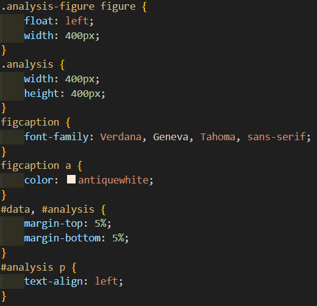
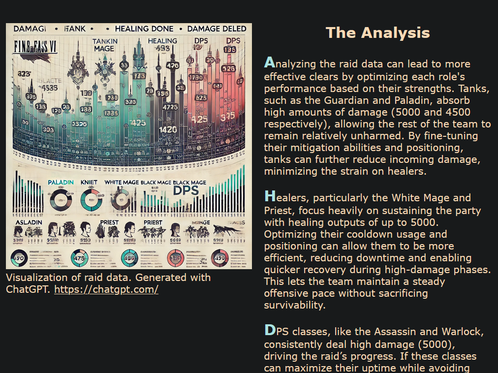
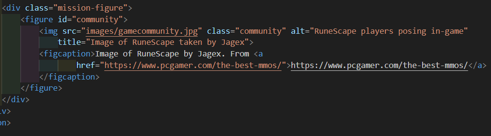

Web Projects
My First Web Project
In one of my courses, I had the opportunity to design a website for a fictional company. As a Data Science student, I chose to create a data analytics website focused on analyzing game data. Through this assignment, I was able to practice utilizing HTML and CSS to design the web pages and achieve the desired layout. Additionally, I developed skills in creating responsive designs to ensure accessibility across various screen sizes, making the website more user-friendly for individuals with disabilities. Please feel free to check out the website HERE.
Layout Design. Through designing this webpage, I was able to apply concepts learned in lectures. For example, on the left, I used CSS to position images and text, achieving the desired layout shown on the right. I ensured that the images and margins were appropriately sized to create the intended design.
 Accessibility. As part of ensuring accessibility, I maintained significant color contrast between the text and background to make the content easy to read. Additionally, distinct colors were used to visually indicate the current page the user is on. The color palette was carefully selected to ensure visible differences between colors, accommodating users with various types of color blindness. Descriptive alt text was also added to images, ensuring that users who cannot see the images can still understand their content.
Responsive Web. To enhance accessibility and improve user experience, I made the webpage fully adaptable to different screen sizes. On smaller screens, images are hidden, and the content transitions into a single-column layout to prioritize readability and minimize distractions. Text and images are dynamically scaled to the viewport, ensuring proper display and usability across various devices and screen sizes. These adjustments make the webpage responsive and user-friendly, accommodating diverse user needs.
Reflection. After completing the assignment and progressing through the course, I realize there are a few areas where the website can be improved. Now that I have learned about Bootstrap, I would likely use it to better position images and text. It would also help in creating more precise columns and rows, improving the alignment and overall layout of the site. Additionally, with my current knowledge, I would consider modifying the navigation bar. Instead of displaying it vertically (which may cover some content), I would use a button to trigger a collapsed or dropdown menu when clicked, providing a cleaner and more accessible interface. Lastly, to enhance accessibility, I could add a "Skip Navigation" link, enabling users to easily tab to the main content of the page without having to navigate through the entire menu.